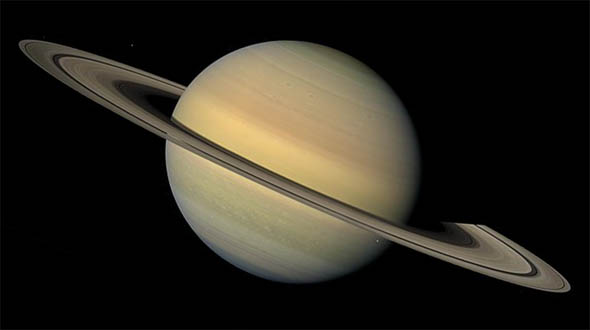

Odległość od Słońca w mln km: 1427
Okres obiegu wokół Słońca: 29 lat 167 dni
Okres rotacji: 10 h 14 min
Średnica (km): 120660
Masa (Ziemia = 1): 95,1
Objętość (Ziemia = 1): 755
Gęstość (g/cm³): 0,7
Prędkość ruchu po orbicie (km/s): 9,6
Liczba znanych księżyców: 60
Saturn jest szóstą planetą od Słońca, drugą co do wielkości (po Jowiszu), planetą naszego Układu. Jest jedną z planet zewnętrznych, gazowych gigantów. Jest bardzo zimny, ponieważ znajduje się bardzo daleko od Słońca i otrzymuje od niego zaledwie 1/10 ilości ciepła i światła co Ziemia. Pierścienie wokół Saturna, odkryte przez Galileusza, czynią go jedną z najpiękniejszych planet Układu Słonecznego. Są ich setki, a rozciągają się one na przestrzeni tysięcy kilometrów. Prawdopodobnie składają się z milionów brył lodu o średnicy od kilku centymetrów do kilkudziesięciu metrów, które są widoczne za pomocą teleskopu. Ich grubość wynosi zaledwie około 10 metrów. Najprawdopodobniej pierścienie tworzy materiał, z którego kiedyś miał się uformować księżyc. 7 spośród pierścieni jest oznaczonych kolejnymi literami alfabetu od A do G.
Okres obiegu Saturna wokół własnej osi trwa prawie 11 godzin. Atmosfera jego składa się głównie z wodoru, helu i amoniaku. Tytan, największy z księżyców Saturna, jest jedynym księżycem w Układzie Słonecznym otoczonym atmosferą podobną do ziemskiej. Inny księżyc Saturna, Phoebe, nie powstał w otoczeniu planety, lecz został przechwycony przez jej siły grawitacyjne. Zawiera on dużo mniej lodu i więcej skał niż inne księżyce Saturna. Phoebe okrąża planetę w kierunku odwrotnym od większości pobliskich księżyców, s jej orbita jest mocno nachylona do równika planety. W maju 2005 roku odkryto kolejnych 12 księżyców Saturna, co daje łącznie liczbę 46.
Okres obiegu Saturna wokół własnej osi trwa prawie 11 godzin. Atmosfera jego składa się głównie z wodoru, helu i amoniaku. Tytan, największy z księżyców Saturna, jest jedynym księżycem w Układzie Słonecznym otoczonym atmosferą podobną do ziemskiej. Inny księżyc Saturna, Phoebe, nie powstał w otoczeniu planety, lecz został przechwycony przez jej siły grawitacyjne. Zawiera on dużo mniej lodu i więcej skał niż inne księżyce Saturna. Phoebe okrąża planetę w kierunku odwrotnym od większości pobliskich księżyców, s jej orbita jest mocno nachylona do równika planety. W maju 2005 roku odkryto kolejnych 12 księżyców Saturna, co daje łącznie liczbę 46.